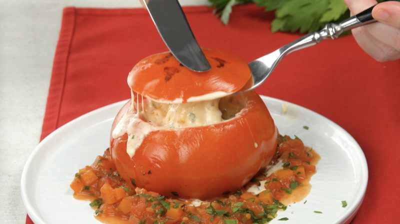
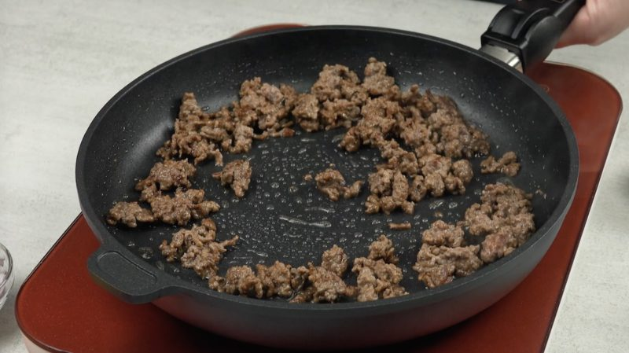
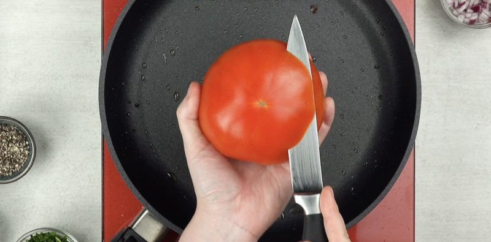
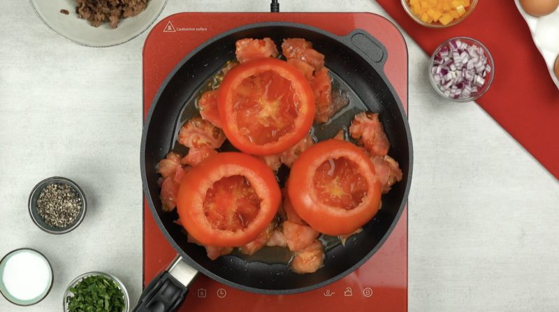
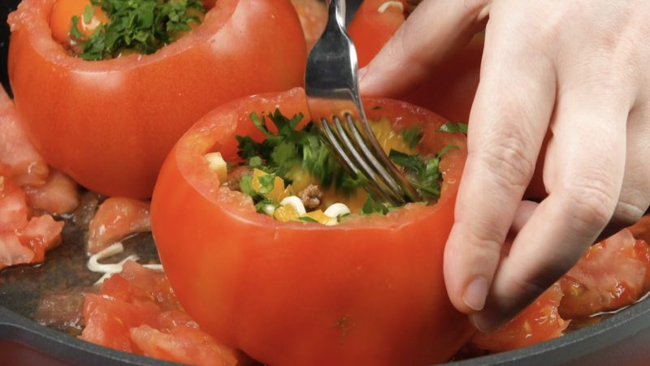
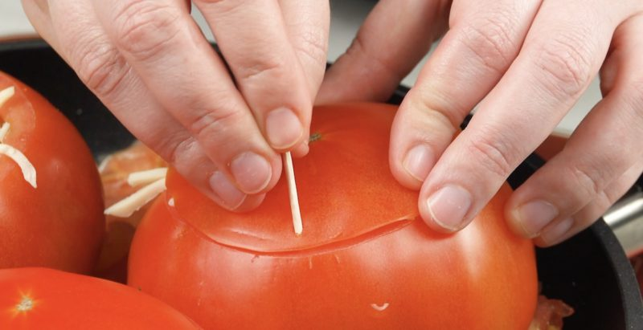

Gefüllte Tomate mit Hackfleisch

Beschreibung:
Gefüllte Paprikaschoten kennt so ziemlich jeder.
Doch gefüllte Tomaten? Dieses Gericht ist nicht so bekannt – schade eigentlich,
denn Tomaten lassen sich wirklich lecker füllen
und das Beste: Du brauchst nur einen Topf bzw. eine Pfanne.
Ein Hoch auf One-Pot-Gerichte!
Zutaten:
- 150 g Hackfleisch
- Salz und Pfeffer
- 3 große Tomaten
- 200 g Mozzarella, gerieben
- 1/2 gelbe Paprika, gewürfelt
- 3 Eier
- 3 EL klein gehackte Paprika
- Zahnstocher
- 1 EL Tomatenmark
- Öl zum Braten
Zubereitung:
- Brate das Hackfleisch kurz an, würze es währenddessen mit Salz und Pfeffer.
Lass das Hackfleisch anschließend in einer Schale abkühlen.

- Schneide die Tomaten an der Unterseite auf. Stelle die Unterseiten beiseite.

- Höhle die Tomaten mit einem Löffel aus.
Gib die Tomaten dann samt Fruchtfleisch in eine Pfanne.

- . Fülle die Tomaten zur Hälfte mit Mozzarella;
gib dann in jede Tomate etwas Hackfleisch, Zwiebelwürfel,
Paprika, Petersilie sowie je ein Ei und rühre alles vorsichtig um.

- Streue Mozzarella über die Füllungen und schließe die Tomaten mit den zuvor abgeschnittenen
Unterseiten, fixiere diese mithilfe von Zahnstochern.
Lass die gefüllten Tomaten abgedeckt bei mittlerer Hitze für 10 Minuten schmoren.

- . Nimm dann den Deckel wieder ab und lass die Soße in der Pfanne reduzieren,
bis sie Blasen schlägt. Gib dann die restlichen Zwiebeln, Paprika, Petersilie
sowie etwas Tomatenmark hinzu und
vermische alles vorsichtig zu einer Soße. Drehe die Tomaten anschließend behutsam um,
um sie auch von dieser Seite zu garen, bis sie oben etwas braun geworden sind.
Richte die Tomaten zusammen mit der Soße auf dem Teller an,
entferne die Zahnstocher und bestreue das Gericht abschließend mit Petersilie –
guten Appetit!
Quelle:
leckerschmecker